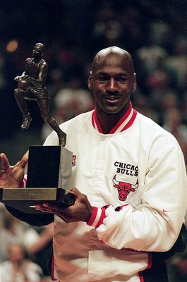
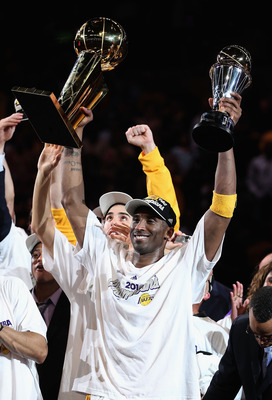
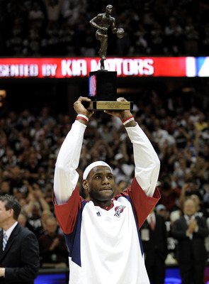
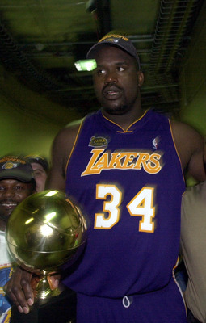
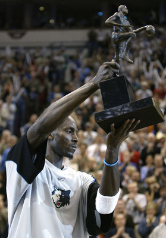

| Michael Jordan (Родился 17 февраля 1963 года, Бруклин, Нью-Йорк, США)

|
Американский баскетболист, бывший игрок НБА. Он также считается одним из лучших защитников в истории баскетбола. Джордан сыграл важную роль в популяризации баскетбола и НБА во всём мире в 1980-х и 1990-х годах. После начала карьеры в команде Университета Северной Каролины (1982—1984), с которой он выиграл чемпионат NCAA 1982 года, Джордан присоединился к команде «Чикаго Буллз» в 1984 году. 5 наград MVP сезона и 6 титулов чемпиона НБА ставят этого человека совершенно отдельно от других. Джордан считается величайшим баскетболистом и спортсменом всех времен и народов, оттого все его призы, титулы и звания смотрятся особенно выигрышно на этом фоне. |
|---|---|
| Kobe Bryant (23 августа 1978г., Филадельфия, Пенсильвания, США — 26 января 2020г., Калабасас, Калифорния, США)

|
Американский профессиональный баскетболист, выступавший в Национальной баскетбольной ассоциации в течение двадцати сезонов за одну команду - «Лос-Анджелес Лейкерс». Играл на позиции атакующего защитника. Был выбран в первом раунде под общим 13-м номером на драфте НБА 1996 года командой «Шарлотт Хорнетс». Кобе Брайант по праву является обладателем одной из самых внушительных коллекций наград и титулов в истории. Сразу по окончании школы начал карьеру в НБА. За это время выиграл пять чемпионских титулов, 18 раз принимал участие в матче всех звёзд, 15 раз включался в сборную всех звёзд и 12 раз в сборную защиты всех звёзд. В составе национальной сборной США дважды выигрывал золото Олимпийских игр, а также становился победителем чемпионата Америки. |
| LeBron Raymone James(30 декабря 1984 года, Акрон, Огайо, США)

|
Американский баскетболист, играющий на позиции лёгкого и тяжёлого форварда. Выступает за команду Национальной Баскетбольной Ассоциации «Лос-Анджелес Лейкерс». Джеймс является трёхкратным чемпионом НБА, трёхкратным самым ценным игроком финала НБА, четырёхкратным самым ценным игроком НБА, самым результативным игроком регулярного чемпионата и новичком года. 12 раз входил в первую сборную всех звёзд НБА, пять раз входил в сборную всех звёзд защиты, 16 раз принимал участие в матче всех звёзд, где трижды признавался самым ценным игроком. |
| Shaquille Rashaun O'Neal(6 марта 1972 года, Ньюарк, штат Нью-Джерси,США)

|
Американский баскетболист, комментатор, баскетбольный телеэксперт, рэпер, а также актёр. Игрок «Орландо Мэджик» (1992—1996), «Лос-Анджелес Лейкерс» (1996—2004), «Майами Хит» (2004—2008), «Финикс Санз» (2008—2009) и «Кливленд Кавальерс» (2009—2010), а также «Бостон Селтикс» (2010—2011). Олимпийский чемпион (1996), чемпион мира 1994 года, четырёхкратный чемпион НБА (2000—2002, 2006). В 1996 году был внесён в список 50 лучших игроков в истории НБА, и из всего списка он был самым молодым. Помимо этого, признан самым ценным игроком НБА 2000 года, на протяжении 15 лет (1993—2009) принимал участие в Матчах всех звёзд, вместе с Уилтом Чемберленом удерживает рекорд Ассоциации — 9 сезонов (из них 5 — подряд) с самым высоким показателем процента попаданий с игры. |
| Kevin Maurice Garnett(19 мая 1976 года, Гринвилл, Южная Каролина, США)

|
Американский баскетболист. Один из лучших баскетболистов ассоциации 2000-х годов. В 2004 году был признан самым ценным игроком регулярного сезона, в 2008 году — лучшим оборонительным игроком, 15 раз принимал участие в матчах всех звёзд, по девять раз был включён в символические сборные всех звёзд и всех звёзд защиты. В составе сборной США стал олимпийским чемпионом в 2000 году. Гарнетт одиннадцать сезонов (1995—2007) выступал за клуб «Миннесота Тимбервулвз», а в 2007 году перешёл в «Бостон Селтикс», в составе которого впервые в своей карьере стал чемпионом НБА в сезоне 2007/08. Известен своим универсализмом, входит в топ-50 в истории НБА по всем 5 основным статистическим показателям (очки, подборы, передачи, перехваты и блок-шоты), при этом по всем показателям, кроме передач, входит в топ-20. |